First Time Survey
1. How often do you journal or reflect on your thoughts?
Daily
Weekly
Monthly
Rarely
2. How do you currently track your mental wellness?
Apps
Paper journal
Memory
Not tracking
3. How frequently do you experience stress or anxiety?
Daily
Few times a week
Occasionally
Rarely
4. Do you currently use any form of guided therapy or self-help resources?
Yes, regularly
Yes, sometimes
No, but I'm interested
No
5. How comfortable are you sharing your thoughts with an AI system?
Very comfortable
Somewhat comfortable
Neutral
Uncomfortable
6. What is your primary goal using NeuroLens?
Track emotional health
Identify patterns
Improve mood
Curiosity
7. How would you describe your tech savviness?
Very tech-savvy
Average
Basic knowledge
Not comfortable with tech
8. What type of input would you prefer to use with the app?
Voice recordings
Text entries
Both equally
Other
9. Would you benefit from daily mental health check-ins?
Yes
Maybe
No
10. Do you want to receive progress summaries?
Yes, weekly
Yes, monthly
Only if I ask
No
Submit Survey